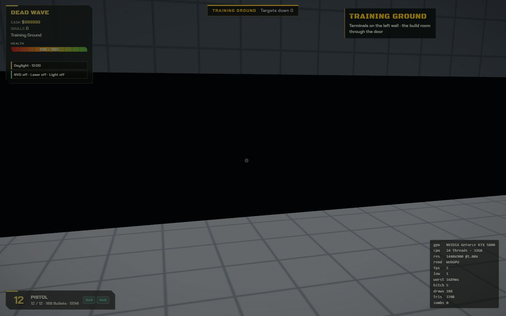
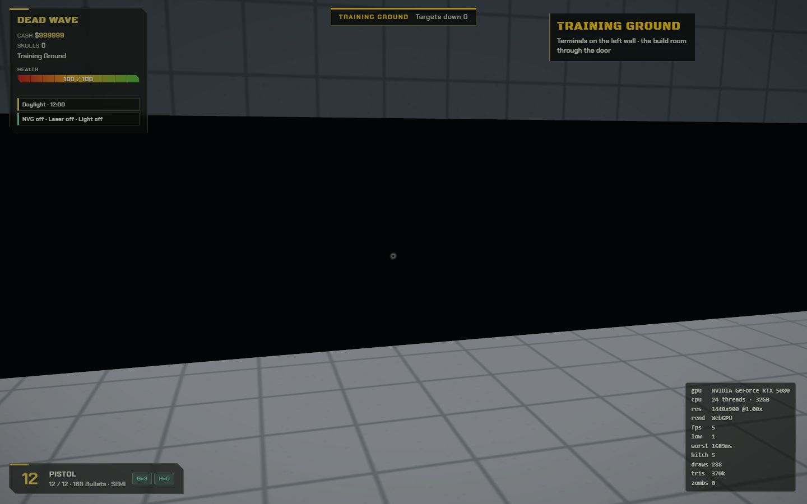
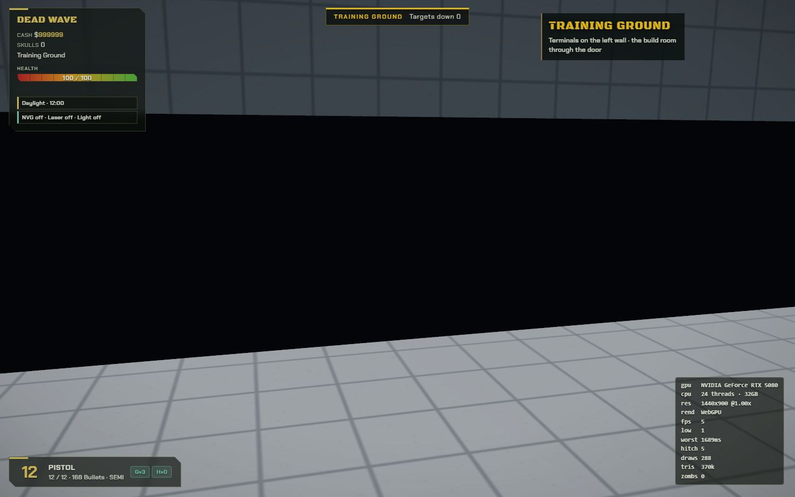

Training facility
A quiet, repeating keyboard pattern, a steady tick and low ventilation hum. No combat score, creature voices, outdoor weather or horror announcements. Guns and handling sounds remain.
The sample is slightly louder than the default in-game mix for review. In-game Music and SFX settings control their respective layers.
Facility cues
Choose a cue to audition its actual in-game synthesis.
Bullet marks
Marks remain for 16 seconds, fade over four seconds, then disappear. This applies to walls, floors and moving targets.
Fresh

Fading

Expired
